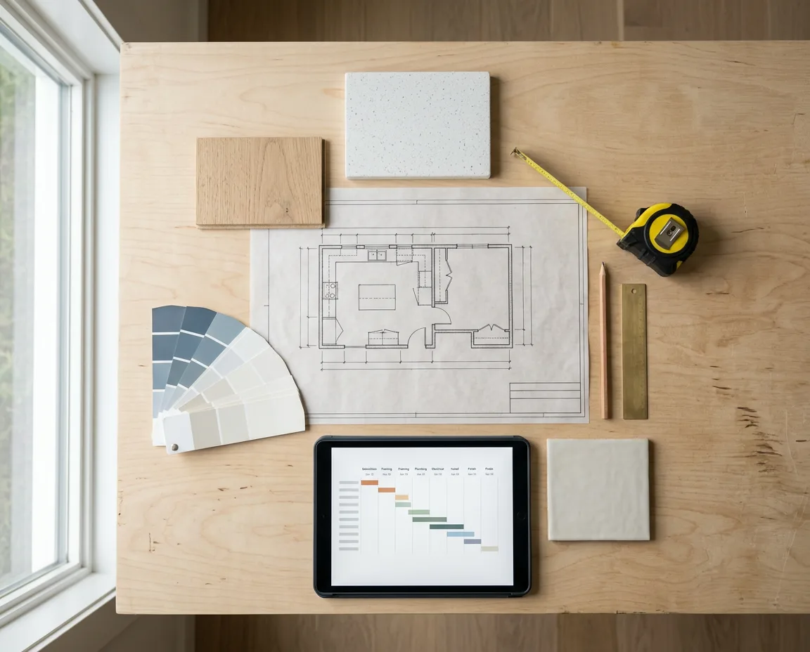

Phase 1Havok
Mitigate
Water out, structure dried and verified. Every reading, photo and removed material is logged.
Reconstruction · Bay Area
Framewell is the rebuild side of Havok Restoration. Same file, same project lead, from the day the water stopped to the day you get your keys back.
How it works
Most homeowners get passed from a cleanup company to a contractor who starts from zero. With Framewell, nothing gets lost in the handoff.
Water out, structure dried and verified. Every reading, photo and removed material is logged.
Framewell opens the same job file. Your project lead, photos, measurements and insurance scope carry straight over.
Framing, drywall, finishes, final walkthrough. Built to the approved scope, on a schedule you can see.
What we rebuild
Ten kinds of rebuild, one way of working: scope first, permits handled, every layer inspected before the next one covers it.
The six phases
The same order on every job. You always know which phase you're in and what comes next.
Sample job shown. Your schedule lives in ClaimTrak and updates as each trade finishes. If a date moves, you know why the same day.
Your estimate
We build what your insurance approved. Anything you add is priced on its own line, so your claim stays clean and you always know who's paying for what.
Projects
Texture, trim profiles and paint sheen matched to the rooms that weren't damaged, so the repair disappears.

How we build
Texture, trim and sheen sampled and approved before a full wall is finished.
We pull them, schedule inspections and keep the signed cards with your job file.
Dust containment, floor protection and a swept site at the end of every day you're living there.
A final walkthrough with you. Anything on the list gets fixed before we call it done.
Service area
Crews and suppliers run from our Livermore shop. Twelve launch areas today, with new cities added each month.
Questions
Plain answers to what homeowners ask us most.
Ready to rebuild
Send us what needs rebuilding. If Havok handled the cleanup, we'll pull your file today.